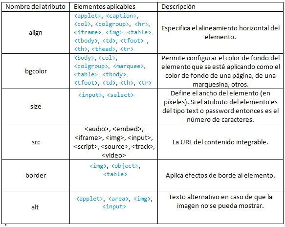

Este sitio esta orientado a generar conocimientos en el ámbito del Diseño de sitios Web y como parte puntual
en esta modulo con enfoque a las temáticas relacionadas con: Etiquetas Básicas de HTML, atributos y valores.
Etiquetas Básicas de HTM

Según MR Gómez – 2013
Actualmente, existen aproximadamente 100 etiquetas o elementos definidos
en HTML. Es posible que algunas de estas etiquetas no se encuentren disponibles
en algunas versiones HTML. A continuación, presentamos una lista detallada
con las etiquetas más comunes:
< html > : Esta etiqueta engloba o representa el inicio y el fin de un documento
HTML. Salvo alguna excepción que veremos más adelante, cualquier otra
etiqueta del documento debe estar definida dentro de la misma.
< body > : Etiqueta que engloba el cuerpo del documento HTML, cualquier
contenido o información que vayamos a mostrar en nuestra página web debe
estar codificado dentro de esta etiqueta.
< head > : Es la etiqueta que define el inicio y el fin de la cabecera del documento HTML.
< meta > : Emplearemos esta etiqueta para definir las propiedades de nuestro
documento HTML. Por norma general, esta etiqueta recoge datos tales como
autor, descripción de la página, palabras claves, software o editor con el que
se ha generado el documento y tipo de contenido. Los atributos y uso de esta
etiqueta son:
name: Dependiendo del valor de este atributo estaremos describiendo
una información u otra: author para definir el autor de la página web,
description para describir el contenido del sitio web, generator para
establecer el nombre del editor HTML que estamos utilizando y keywords
para definir las palabras claves que identifican el contenido de la web.
http-equiv: Maneja información que se envía al servidor en la cabecera
http.
content: Recoge el valor de los atributos name y http-equiv.
< title > : Etiqueta que define el título o nombre de nuestra página web. Este
nombre es el que suele aparecer en la barra de título de las ventanas. Es obligatorio definir esta etiqueta dentro de < head >.
< title >Este sería el título de nuestra web< /title >
< link >: Utilizaremos esta etiqueta para definir las rutas donde el documento
HTML debe buscar las hojas de estilo externas (CSS) o iconos. Si declaramos
esta etiqueta, debe ser siempre dentro de la cabecera. Los principales atributos de esta etiqueta son:
href: Ruta donde se encuentra el recurso en cuestión.
rel: Relación entre el documento y el objeto o recurso que estamos
vinculando.
type: Tipo de MIME del objeto enlazado.
Un ejemplo de uso del elemento
< link >:
< link href="css/estilo.css" rel="stylesheet" type="text/css" >
Gómez, M. R. (2013). HTML, CSS Y JAVASCRIPT.
Atributos y valores
Segun FC Ojeda - 2005 - fcharte.com
Los atributos de HTML son palabras especiales utilizadas dentro de la etiqueta de apertura, para controlar el comportamiento del elemento. Los atributos de HTML son un modificador de un tipo de elemento de HTML. Un atributo tampoco modifica la funcionalidad por defecto de un tipo de elemento o proporciona funcionalidad a ciertos tipos de elementos incapaces de funcionar correctamente sin ellos. En sintaxis HTML, un atributo se añade a una etiqueta de inicio de HTML.
Se han reconocido varios tipos de atributos básicos, incluyendo:
(1) atributos requeridos, necesitados por un tipo de elemento particular, para que aquel tipo de elemento funcione correctamente;
(2) atributos opcionales, utilizados para modificar la funcionalidad por defecto de un tipo de elemento;
(3) atributos estándares, soportados por muchos tipos de elementos; y
(4) atributos de evento, utilizados para causar que los tipos de elemento especifiquen guiones o script para ser ejecutados bajo circunstancias concretas.
Algunos tipos de atributo funcionan de manera diferente, cuándo son utilizados para modificar diferentes tipos de elemento. Por ejemplo, el atributo name (nombre) se utiliza por varios tipos de elementos, pero tiene funciones ligeramente diferentes en cada uno.
Los atributos de HTML generalmente se muestran como una pareja nombre-valor, separados por =, y están escritos dentro de la etiqueta de inicio de un elemento, después del nombre del elemento


Ojeda, F. C. (2005). La biblia de HTML. Anaya Multimedia.